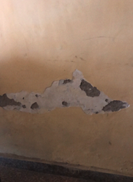

<section class="h-screen flex flex-col">
  <nav
    class="flex justify-between items-center px-6 py-3 border-b caseDetailView"
  >
    <div class="flex items-center gap-2 text-gray-500 font-medium">
      <button (click)="goBack()">
        <mat-icon>keyboard_backspace</mat-icon>
      </button>
      <span>Photo "Photo 2024_05_05_05:31:25"</span>
      <mat-icon>keyboard_arrow_down</mat-icon>
    </div>
    <div class="flex items-center gap-2">
      <span class="text-gray-500 font-medium">Overlay</span>
      <mat-slide-toggle></mat-slide-toggle>
      <button mat-button class="!text-blue-400">Reset</button>
      <button mat-button class="!bg-blue-400 !text-white">Save</button>
    </div>
  </nav>
  <div class="flex gap-2 items-center justify-between px-6 py-3 border-b">
    <div class="flex gap-2 items-center">
      <button mat-button class="!text-gray-500" (click)="openDialog()">
        <mat-icon>library_books</mat-icon>Notes
      </button>
      <mat-label class="flex mr-0.5 text-gray-500"
        ></mat-label>
      <mat-form-field>
        <select matNativeControl required>
          <option value="cm">CM</option>
          <option value="inches">Inches</option>
          <option value="feet">Feet</option>
        </select>
      </mat-form-field>
      <button
        mat-button
        class="measureBtn !text-gray-500"
        (click)="removePins()"
      >
        
        Remove pins
      </button>
    </div>
    <div class="flex gap-2 items-center">
      <button mat-button class="measureBtn !text-gray-500" (click)="measure()">
        
        <span>Measure</span>
      </button>
      <button
        mat-button
        class="extendBtn !text-gray-500"
        (click)="openSnackBar('Please click on measure button', 'Close')"
      >
        
        <span>Extend plane</span>
      </button>
    </div>
    <div class="flex gap-2 items-center">
      <button mat-button class="measureBtn !text-gray-500" (click)="magnify()">
        
        <span>Magnify</span>
      </button>
      <button mat-button class="!text-gray-500" (click)="support()">
        <mat-icon> mail_outline</mat-icon>
        <span>Support</span>
      </button>
      <button mat-button class="!text-gray-500" (click)="faq()">
        <mat-icon>question_answer</mat-icon>
        <span>FAQs</span>
      </button>
    </div>
  </div>
  <div class="flex justify-center py-3 flex-1">
    
  </div>
</section>
